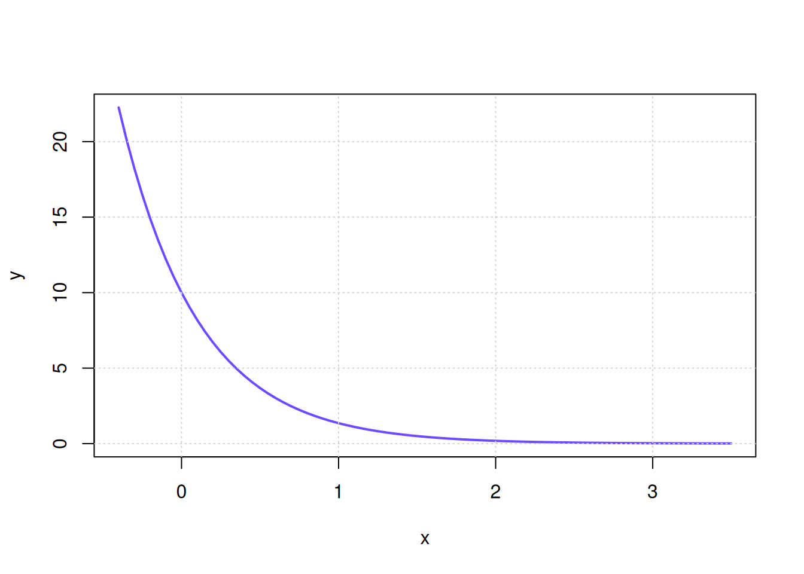

Chapitre 1 : Révision — Estimation de paramètres d’un modèle
Exercice 1 : Décroissance exponentielle
La courbe ci-dessous représente un modèle exponentielle, d’équation :
\[ y = A \cdot e^{B \cdot x}\]
Estimez les paramètres A et B à partir du graphique ci-dessous. (A et B sont des nombres entiers)
- \(A =\)
- \(B =\)
TipIndice
Poser \(x= 0\) pour trouver \(A\).
Exercice 2 : Modèle hyperbole
La courbe ci-dessous représente un modèle hyperbole, d’équation :
\[ y = C \cdot \frac{x}{x+D} \]
Estimez les paramètres C et D à partir du graphique ci-dessous. (C et D sont des nombres entiers)

- \(C\) =
- \(D\) =
TipIndice
Que se passe t’il lorsque x devient très grand ?
Exercice 3 : Modèle puissance
La courbe ci-dessous représente un modèle puissance, d’équation :
\[ y = A \cdot x^{B}\]
Estimez les paramètres A et B à partir du graphique ci-dessous. (B est un nombre entier)

- \(A =\)
- \(B =\)
TipIndice
Poser x=1 pour trouver A
Exercice 4 : Modèle Sigmoïde
La courbe ci-dessous représente un modèle hyperbole, d’équation :
\[ y = A \cdot \frac{1}{B-x} \]
Estimez les paramètres A et B à partir du graphique ci-dessous. (A et B sont des nombres entiers)

- \(A\) =
- \(B\) =
TipIndice
Que se passe t’il lorsque x devient très grand ?
Exercice 5 : Modèle Van Deemter
En chromatographie, la hauteur du plateau \(H\) peut dépend de la vitesse de l’éluant \(u\). Le modèle corrament utilisé pour modéliser cette dépendance est l’équation de van Deemter :
\[ H = A + \frac{B}{u} + C \cdot u \]
Estimez les paramètres A, B et C à partir du graphique ci-dessous. (A, B et C sont des nombres entiers)

- \(A =\) [mm]
- \(B =\) [\(\text{mm}^2 \cdot \text{s}^{-1}\)]
- \(C =\) [s]
0 / 0